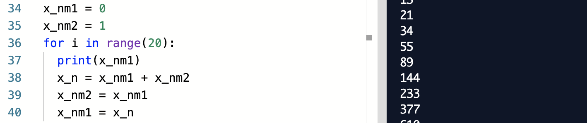
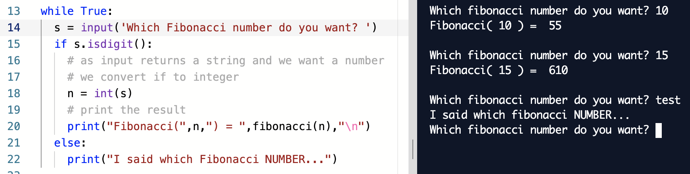

Introduction to Python
During the upcoming robotics summer school, I'll need you to be confortable with the basics of python programming. I wrote this page using embedded codes to have everyone starting with the bare minimum going from a simple "Hello world" script to using variables, loops, conditions and functions. As the program of the summer school will be intense, I'll need you to be confortable with those.
Comments and simple instructions
For each section of this page I'll use embedded code that allow you to run python scripts without leaving this page, and interact with the code as you wish. So let's go: read the code, try to predict what's going to happen in the terminal (in black), and press the play button.
Again, don't hesitate to change the code and press play again to try things out, anything ! For that you can also directly type instructions in the terminal (the black window).
Variables and standard operations
Computers are so useful to us because they don't always do the same things over and over. It's the same with mobile robots, they can adapt to their environment. This would be impossible to do without taking into account some variations in our programs. To deal with those variations, we use what we call variables. A variable is like a box where we put some information that can vary during the execution of a program.
Same here, change the code, make it crash ! (Even more than it already does !)
Loops
Another way computers and robots change our lives is in their ability to cope with repetitive tasks without being bored. But the programmer who programmed them gets easily bored, so he needs to have a tool to take care of repetitions in his code. That's what loops are for.
Exercice 1
Add some lines in the script above to display the 20 first numbers of the Fibonacci sequence.
Solution exercice 1

Functions
Do you know what assembly language is ? Take a few seconds to have a look at it on wikipedia and try to decipher what the program in the top right image does... That's not the language you want to program every day ! Take some time to contemplate the chance you have to not go through that and instead use python.
Well, you have this chance partly thanks to functions. As in mathematics, functions can take arguments and return a value. You should have all by now used the cosine function. Cosine takes onoe parameter, an angle, and returns a value in between -1 and 1. In computer science, functions come in many forms. They can take argument(s) or not. They can return values but they don't have to (in this case we could call it a procedure).
Such a tool allow to make our code readable, less repetitive, and combine and build functions with and on one another. That's how, thanks to programmers, your computer can understand some high level languages like python, while at its core it can only understand assembly. Let's see how to use this incredible tool in python.
Exercice 2
Define a function with one parameter n that computes and returns the golden ratio using the fibonacci nth and n+1th numbers.
Solution exercice 2
See how simple the exercise is if we use the predefined fibonacci function. The exercise would have been much harder if we had to start from scratch.
Conditions
In our programs, depending on some variables, sometimes we want to do things, sometimes we don't. To perform such a feat the last ingredient we are missing in our arsenal of tools are conditions. Conditions are quite simple and we use them everyday: Does it rain ? Yes/No => Take an umbrella/Don't. Note that in computer science, conditions are made of: a test resulting in a boolean (True or False), what to do if the test is True, and sometimes what to do if it is not.
Exercice 3
Modify the code following the instructions inside it.
Solution exercice 3

Conclusion
That's all for now. Thanks for going through this introduction and I see you soon to use those new skills to discover the world of mobile robotics.